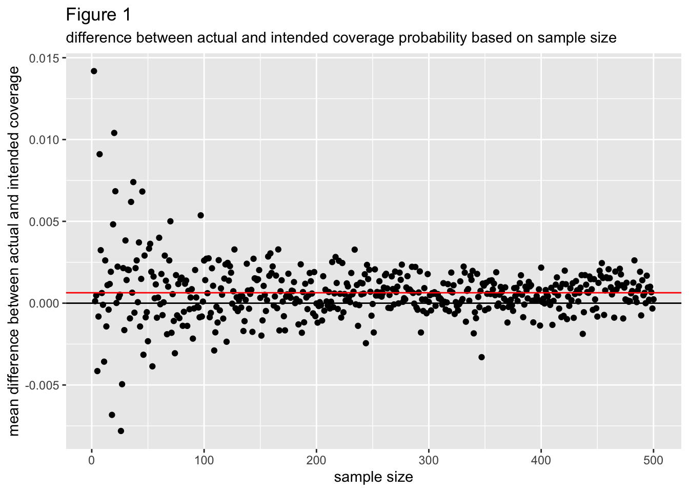

library(tidyverse)Simulation
Using Normal Prediction Intervals on Symmetric Beta-distributed data
Introduction
Symmetric beta distributions and normal distributions are very similar to each other in shape. Due to this, in this project I examine how a 95% prediction interval that assumes data originates from a normal distribution would fare in terms of prediction accuracy and actual coverage probability of beta-distributed data. I define a prediction interval with “good” prediction accuracy as one that covers the actual mean of the data’s parent distribution, and a prediction interval with good coverage probability as one that covers approximately .95 of the beta distribution. All data is generated from beta distributions with mean .5.
Simulations
First, I tidy up.
Then, I define a few functions that will help me in my task.
PI <- function(data, coverage_prob){
#Generates a normal prediction interval with an intended coverage probability of coverage_prob based on a vector of numeric data
n <- length(data)
lower_tscore <- qt((1-coverage_prob)/2, df = n - 1)
upper_tscore <- qt(((1-coverage_prob)/2) + coverage_prob, df = n - 1)
avg <- mean(data)
stan_d <- sd(data)
lower_bound <- avg + lower_tscore*stan_d * sqrt(1 + (1/n))
upper_bound <- avg + upper_tscore*stan_d * sqrt(1 + (1/n))
return(data.frame(PI_percentage = coverage_prob, lower = lower_bound, upper = upper_bound))
}PI is a function that takes a vector of numeric data and produces a high-density prediction interval intended to cover the proportion of said data’s parent distribution, which is given by coverage_prob. This prediction interval is created under the assumption that the data is normally distributed (although we know it is not). Let \(s\) be the sample standard deviation of our data, \(n\) be the size of our sample, \(\hat{p}\) be the mean of our data, and \(t_{p,n-1}\) be the quantile value associated with the highest density coverage probability \(p\) in a \(t\) distribution with \(n-1\) degrees of freedom. If we assume that our data is normal, then the highest density prediction interval with coverage probability \(p\) is best predicted as
\[\hat{p} \pm t_{p,n-1}*s*\sqrt{1+\frac{1}{n}}\] PI uses this formula to generate the bounds of its prediction interval.
one_beta_simulation <- function(n, alpha, beta, pi_prop){
#Assesses prediction accuracy and actual coverage probability of a normal prediction interval when used on a vector of numeric data of size n. The numeric data is generated from a beta distribution with parameters alpha and beta.
cover_df <- PI(rbeta(n, alpha, beta), pi_prop)
cover_prop <- pbeta(cover_df[1, "upper"], alpha, beta) - pbeta(cover_df[1, "lower"], alpha, beta) #this is the proportion of the data's parent distribution that is actually covered by the normal prediction interval generated for said data.
mean_in_interval <- .5 >= cover_df[1, "lower"] & .5 <= cover_df[1,"upper"]
param_df <- data.frame(cover = cover_prop, alpha = rep(alpha, nrow(cover_df)), beta = rep(beta, nrow(cover_df)), mean_in_interval = mean_in_interval)
df <- cbind(cover_df, param_df)
return(df)
}one_beta_simulation randomly samples \(n\) data points from a beta distribution with parameters alpha and beta and calculates a normal prediction interval for said data using function PI. It then determines what proportion of the data’s parent beta distribution is covered by the prediction interval and checks if the mean of said distribution is covered by the prediction interval.
beta_sims_n <- function(n){
#Iterates over a vector of possible alpha = beta values and applies one_beta_simulation to each possible value of alpha/beta. All simulations use data of sample size n.
df1 <- map(parameters,\(param) one_beta_simulation(n, param, param, pi) ) %>%
list_rbind()
df2 <- data.frame(n = rep(n, nrow(df1)))
df <- cbind(df2, df1)
return(df)
}beta_sims_n maps over a vector of potential parameter values for a beta distribution with mean \(.5\) and uses one_beta_simulation per each iteration, with all iterations taking the same value for the data’s sample size. It randomly samples \(n\) points multiple times from different beta distribution with mean .5 and generates normal prediction intervals for each sample. It also determines the proportion of the each sample’s parent distribution that said intervals actually cover.
Time to simulate over different parameter values and sample sizes!
parameters <- seq(5, 200, by = 2)
n <- 2:100
pi <- .95
beta_df <- map(n, \(n) beta_sims_n(n)) %>%
list_rbind()This is a glimpse at the results of the simulations.
rows <- sample(1:nrow(beta_df), 10)
map(rows, \(i) beta_df[i,]) %>%
list_rbind() n PI_percentage lower upper cover alpha beta mean_in_interval
1 37 0.95 0.2853054 0.6720723 0.9320580 11 11 TRUE
2 20 0.95 0.3273941 0.6728716 0.9017709 11 11 TRUE
3 29 0.95 0.4582057 0.5475181 0.8873309 159 159 TRUE
4 62 0.95 0.4495713 0.5516827 0.9576683 197 197 TRUE
5 92 0.95 0.4468424 0.5546758 0.9662007 193 193 TRUE
6 91 0.95 0.4129339 0.5787544 0.9374421 63 63 TRUE
7 24 0.95 0.4491427 0.5543625 0.9325523 151 151 TRUE
8 97 0.95 0.4219788 0.5714520 0.9253396 71 71 TRUE
9 85 0.95 0.4125007 0.5797363 0.9539267 71 71 TRUE
10 82 0.95 0.4138168 0.6154069 0.9615211 57 57 TRUEThis is a random sample of rows from the actual dataset, which has 48902 rows and 8 columns. Each row corresponds to a simulated random sample of size n from a beta distribution with parameters alpha and beta. For each random sample, a normal prediction interval was generated with bounds “lower” and “upper”. “PI_percentage” refers to the intended coverage probability and “cover” refers to the actual coverage probability of said prediction interval over the beta distribution the data was generated from. “mean_in_interval” is a binary variable that states if the prediction interval covered the mean of the distribution.
Insights
n_means_df <- beta_df %>%
mutate(diff = cover - PI_percentage) %>%
group_by(n) %>%
summarize(mean = mean(diff), mu_in_interval = sum(mean_in_interval)/n())
avg <- mean(n_means_df$mean)
ggplot(n_means_df, aes(x = n, y = mean)) +
geom_point() +
geom_hline(yintercept = 0, col = "black") +
geom_hline(yintercept = avg, col = "red") +
labs(
x = "sample size",
y = "difference between actual and intended coverage",
title = "Figure 1",
subtitle = "difference between actual and intended coverage probability based on sample size",
)
Figure 1 graphs the mean difference between the actual coverage probability and intended coverage probability (calculated as: actual coverage probability - intended coverage probability) per each sample size from 2 to 10000. A negative mean difference indicates the actual coverage probability tended to be less than the intended coverage probability, which is undesirable, while a positive mean difference indicates the actual cover probability tended to be more than the intended coverage probability. The mean difference between actual and intended coverage probability seems to converge to a value a little bit above 0 as the sample size increases, indicating that actual coverage probability tends to be more than the intended coverage and that this is more so as sample size increases.
For small sample sizes the mean difference between actual and intended coverage probability has a lot more variance around 0 than it does for larger sample sizes, which can be attributed to sampling variability. Overall, absolute differences in actual coverage probability and intended coverage probability don’t appear to extend beyond .02, indicating normal prediction intervals tend to have good coverage probability for symmetric, beta distributed data.
n_means_df <- beta_df %>%
mutate(diff = cover - PI_percentage) %>%
group_by(n) %>%
summarize(mean = mean(diff), mu_in_interval = sum(mean_in_interval)/n()) %>%
filter(n %in% 1:30)
ggplot(n_means_df, aes(x = n, y = mu_in_interval)) +
geom_point() +
labs(
x = "sample size",
y = "proportion of mu-inclusive prediction intervals",
title = "Figure 2",
subtitle = "proportion of mu-inclusive prediction intervals based on sample size"
)
Figure 2 plots the proportion of prediction intervals that cover mu = .5 per each sample size from 2 to 30. These points converge to 1 at a sample size of around 4, meaning for sample sizes of 4 or greater it is probable that all random samples with those samples sizes will produce normal-prediction intervals that cover the mean of the beta distribution said data originated from.
ns_of_interest <- c(5, 10, 30, 50, 100, 500)
beta_df_2 <- filter(beta_df,n %in% ns_of_interest) %>%
mutate(sample_size = as.factor(n))
ggplot(beta_df_2, aes(x = alpha, y = cover, color = sample_size)) +
geom_point() +
geom_smooth(aes(line = n ), se = FALSE) +
labs(
x = "value of alpha and beta",
y = "actual coverage probability",
title = "Figure 3",
subtitle = "actual coverage probability based on parameter values"
)
Figure 3 plots the actual coverage probability per each value of alpha and beta. Points and lines are colored based on sample size, which are described in the legend. Alpha and beta have the same values, by the way. All the lines of best fit seem close to being horizontal, meaning that there most likely is not a relationship between the values of alpha/beta and the actual coverage probability of the data’s prediction interval. Based on the large overlap between lines, normal prediction intervals based on small amounts of data don’t seem more likely to deviate from the intended coverage probability of the data’s parent symmetric beta distribution, although they do have larger amounts of variability around their mean coverage probability.
Conclusion
By generating data from symmetric beta distributions with mu = .5 and making normal prediction intervals based on this data, I was able to assess the predictive accuracy and actual coverage probability of normal prediction intervals when applied to symmetric-beta data. Even given small sample sizes, normal prediction intervals seem to have good predictive accuracy and good coverage probability.